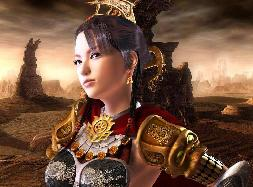
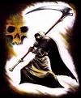
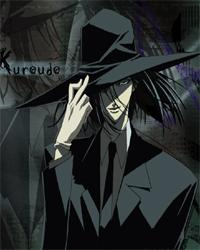
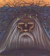

Forums galactiques > Taverne galactique : lieu de discussion informel > Succession
Pages : 1 2
| Divine des jeux Réputation à la taverne : 0  10/02 ETU 11:04 | Score : 4 Détails Chers joueurs, ce jour est un grand jour dans l'histoire des Jeux Intergalactique.
En effet, notre PDG Araskel a decidé de demissionné, apres avoir prit conscience que notre venerable institution ne pouvait decidement etre dirigé par un commandant deja occupé a divers autres taches. Il est donc temps pour vous, oui vous, commandants desireux d'amusé vos camarades, de vous presentez, en expliquant vos motivations. Voici deja, la charte de la DDJ: 1. La DDJ permet de financer le développement des projets galactiques globaux qui devront être décidés par l'ensemble des commandants participants. 2. La DDJ est financée par : - des dons de Dieu en personne. - les cotisations desj commandants oueurs. 3. La DDJ est gérée par un commandant à la fois. - Le commandant qui la gère actuellement est le commandant Araskel. - Celui-ci est en charge du respect de la présente charge. - Celui-ci fait un rapport des comptes de la DDJ toutes les 2 semaines auprès de Dieu. - En récompense de son travail et de son idée, le commandant reçoit un salaire de 1% des mises des joueurs. 4. Concernant la lotterie... - 1% des mises sont offerts au commandant qui gère la DDJ. - 50% des mises sont offertes à l'heureux gagnant. - 30% des mises sont conservées pour des lotteries exceptionnelles. - le reste est stocké en plus des dons divins pour financer des projets galactiques de grande ampleur. - Le tirage au sort est effectué PAR DIEU (seule personne complètement neutre) sur demande du commandant gestionnaire. "Le montant actuel de la cagnotte est de 172 339 863 999 de leems, gain ammassé suite a un tirage n'ayant trouvé de gagnant. N'hesitez pas a posé des questions, notre PDG se fera une joie de vous repondre!" | ||
| Madame Démocratie Réputation à la taverne : 47  10/02 ETU 11:22 | Score : 0 Détails Je me présente a ce poste.
Voici mes motivations : _J'aime bien m'amuser et amuser les autres. _J'aime bien faire gagner de l'argent aux autres. _Je ne suis pas particulièrement occuper en ce moment . _Ce poste m'intéresse depuis quelque temps déjà. _J'ai plein d'idée de jeu à vous faire connaître. Donc pour finir si vous me voulez comme divine des jeux ,j'en serais ravi . | ||
| Guillaume Tell Réputation à la taverne : 344  10/02 ETU 12:40 | Score : 0 Détails Je me présente également pour ce poste.
Je suis quelques peu dépendant des jeux d'argent. Ce poste serait une sorte de thérapie pour moi, car je ne pourrais pas y participer. J'aime distribuer mon argent, vous en avez eu la preuve à Noël. Ma défense est faible face aux motivation de Madame Démocratie, mais qui ne tente rien n'as rien. | ||
| piti man Réputation à la taverne : 5 10/02 ETU 16:58 | Score : 0 Détails Piti Man ce présente logiquement a ce poste.
Mes motivations sont apparentes, en effet, ayant été informé (à mauvais titre) que cette loterie n'existait malheureusement plus, j'ai choisi de prendre sur moi la gestion d'une nouvelle loterie. Il me parait évident que ces deux loteries ne sont pas viables ensemble, celle que j'ai créé sera donc fermée à la suite de son premier tirage au sort. Ayant déjà commencé à gérer une loterie, je comprend tout le travail nécessaire que cela impose et suis près à le faire au nom de la divine lotterie. | ||
| Madame Démocratie Réputation à la taverne : 47 10/02 ETU 18:22 | Score : 3 Détails Je viens vous déclarer que Guillaume Tell et moi ...
Nous nous présentons ensemble pour le poste de PDG de la divine des jeux. Si nous serions élu alors nous dirigerions alors ensemble la divine des jeux. Vous aurez alors plus de jeux en moins de temps , la divine des jeux pourrait alors rendre plus heureux de commandants pour ceux qui gagneraient aux jeux. Je vais maintenant laisser Guillaume Tell qui va vous expliquer sa plus en détails et mieux que moi sûrement . | ||
| Grabeuh Réputation à la taverne : 1675  10/02 ETU 18:30  | Score : 0 Détails Le système de tirage au sort qu'Archevèque et moi avons mis au point sera confié au(x) nouveau(x) responsable(s) de la D.D.J
Il est disponible à l'adresse suivante : http://ldcthanatos.free.fr/Tirage%20Loto.rar Je mets aussi mon espace FTP à disposition pour stocker le fichier texte résultant du tirage, si vous ne disposez pas d'un espace de stockage libre. | ||
| Guillaume Tell Réputation à la taverne : 344 10/02 ETU 18:53 | Score : 1 Détails Voici quelques informations supplémentaires sur le fonctionnement de La Divine des Jeux si Madame Démocratie et moi sommes élus.
Deux tirages seront effectués chaque semaine. (Le jour reste à définir) Toutes les 2 semaines, une cagnotte exceptionnelle sera mise en jeu. D'autre projet sont en cours de création pour votre bonheur. Madame Démocratie et Guillaume Tell, candidat à la Direction de La Divine des Jeux. | ||
| ocean Réputation à la taverne : 708  10/02 ETU 20:43 | Score : 1 Détails J'appuie cette double candidature de Guillaume Tell et Dame Démo
| ||
| Jenn Réputation à la taverne : 67  10/02 ETU 22:04 | Score : 4 Détails Je me présentes au pour gérer la DDJ.
Je suis complètement gaga de tous ces jeux, de tous ce fric qui coule à flots, de.. hum. Enfin bref, tout ça pour dire que je serais honorée de pouvoir gérer la DDJ. J'ai déjà quelques idées de jeux, dont une qui devrait vous amusez au plus haut point, avec plein de lots !!!!!!!! N'étant engagée dans aucuns conflits, je pourrais consacrer un maximum de temps à la récolte des dons des volontaires, à organiser des jeux , des concours, des tournois!!!! Tout, tout, tout!!!!!!!! Je suis prête à contribuer à l'amusement de la Galaxie, pour apporter de la joie dans les chaumières et de la chaleur dans vos coeurs. Sans oublier des leems à foison, pour rembourrer vos édredons!!! | ||
| Vincent Valentine Réputation à la taverne : 70  11/02 ETU 14:44 | Score : 0 Détails Je me présente également au poste!
J'ai plusieurs idées originales en tête... De plus, je pourrais organiser les événements à un rythme assez régulier... Je suis également assez présent au besoin, et accepterais toute proposition concernant de nouveaux divertissements. | ||
| Araskel Réputation à la taverne : 396  11/02 ETU 21:02 | Score : 0 Détails "Bien, apres analyse des differentes propositions, apres des litres de café, apres moults nuits blanches, apres avoir pesé le pour et le contre, j'ai enfin choisi mon successeur.
Avant toutes choses, je remercie les autres commandants d'avoir participé, et je les encourage a travaillé en collaboration avec le gagnant, en effet, possedé le compte de la DDJ ne signifie pas d'avoir le monopole sur ce genre d'activités, Enfin...venons en au fait... Le nouveau PDG est...ah, ils sont deux...les nouveaux PDG sont: Guillaume Tell ET Madame Démocratie! Ils auront accés au pass des ce soir!" | ||
| Guillaume Tell Réputation à la taverne : 344 11/02 ETU 21:13 | Score : 0 Détails C'est avec une grande joie que j'apprends cette nouvelle et je vous en remercie.
Vu la motivation des candidats à cette succession, j'invite les Commandants piti man, Jenn et Vincent Valentine à me contacter, si bien sur ils sont toujours intérresser par La Divine des Jeux. | ||
| Madame Démocratie Réputation à la taverne : 47 11/02 ETU 21:17 | Score : 0 Détails Je ne sais pas quoi dire ...
C'est un honneur ! merci merci . J'essayerais avec mon collègue de bien assumer cette tache . | ||
| Dark Vicking Réputation à la taverne : 92  11/02 ETU 22:37 | Score : 0 Détails Je salue les nomminations de Madame Demo. et Guillaume Tell
| ||
| Yumeno Hate Réputation à la taverne : 92 11/02 ETU 22:57 | Score : 0 Détails Quelle surprise...
Juste une question : Quels ont été les critères de choix dans votre selection ?? | ||
| Dark Vicking Réputation à la taverne : 92 11/02 ETU 23:04 | Score : 0 Détails ... comme d'habitude toujours des grincheux, mais arrete donc de ronfler un peu!
| ||
| Yumeno Hate Réputation à la taverne : 92 11/02 ETU 23:15 | Score : 1 Détails Je n'attends pas des insultes, j'attends une réponse, sur ce, vous pouvez partir...
| ||
| Dark Vicking Réputation à la taverne : 92 11/02 ETU 23:18 | Score : 0 Détails heu... vous devez etre suceptible, voir meme un peu benêt car est ce que je vous ai insulté ? J'ai juste constaté que vous faites partis de ceux qui ne sont jamais content... sur ce allez vous couchez vous avez du avoir une dure journée pour déblatéré autan de connerie
ca vous pouvez le prendre comme des insultes | ||
| Yumeno Hate Réputation à la taverne : 92 11/02 ETU 23:24 | Score : 0 Détails Saviez vous que les croyances disent que Dieu a crée l'homme pour lui qu'il se plaigne des erreurs qu'a fait le Divin lors de la Création ?
Je fais pareil, afin que ceux qui se posent en Deux ex machina puissent corriger, remodeler leurs créations (politiques cela va de soi). D'ailleurs, pour le salut de tous, je vous invite a faire de meme. Que la sagesse vous guide... pas d'insultes ici, t'est pas dans ogame la.. | ||
| Dark Vicking Réputation à la taverne : 92 11/02 ETU 23:37 | Score : 0 Détails en gros pour parler le langage des jeunes de préhistoire:
"Tes blazé parce que'un de tes pote a pas été pris donc tu veut qu'il recommence le vote ?" Nan serieusement, vous vous etes arreter à ces gamineries ? Vous n'avez rien de mieu a faire ? |
Pages : 1 2
Forums galactiques > Taverne galactique : lieu de discussion informel > Succession